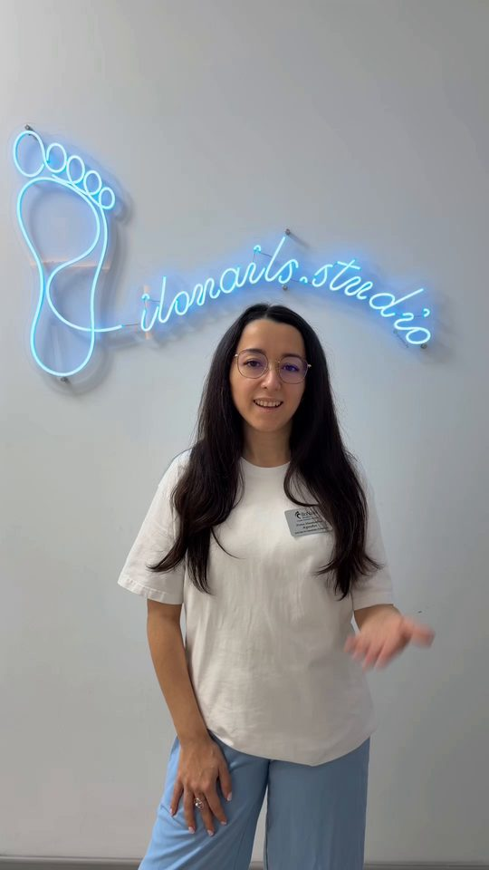
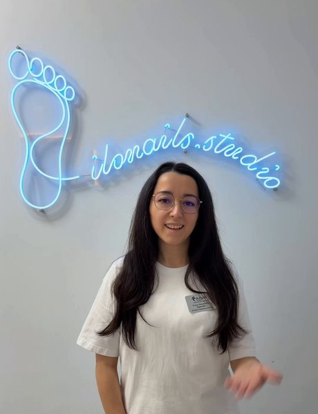
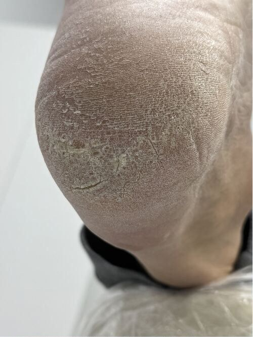
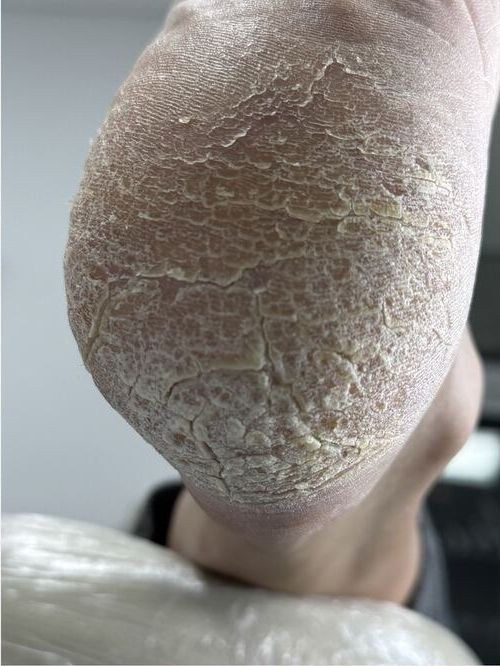
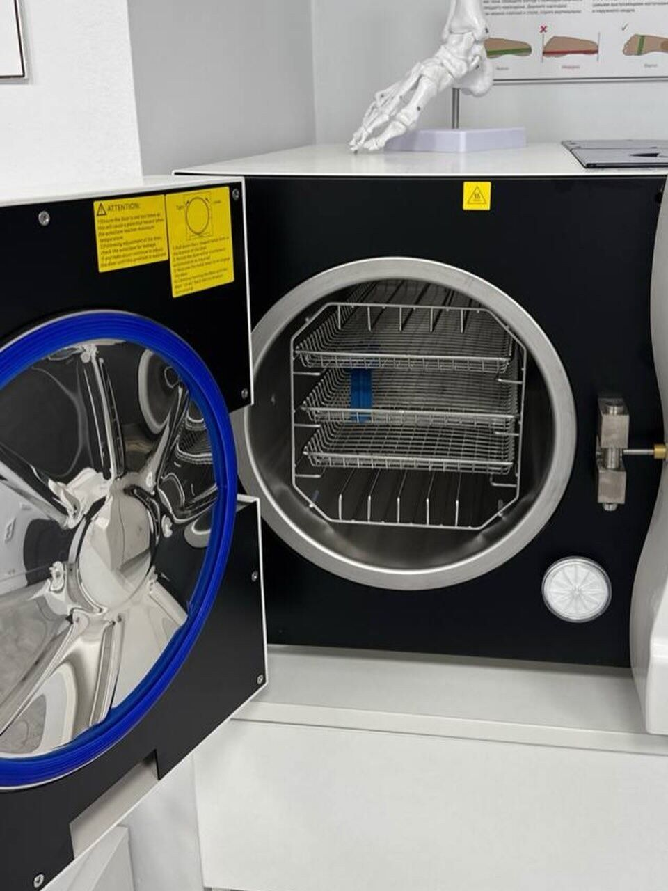
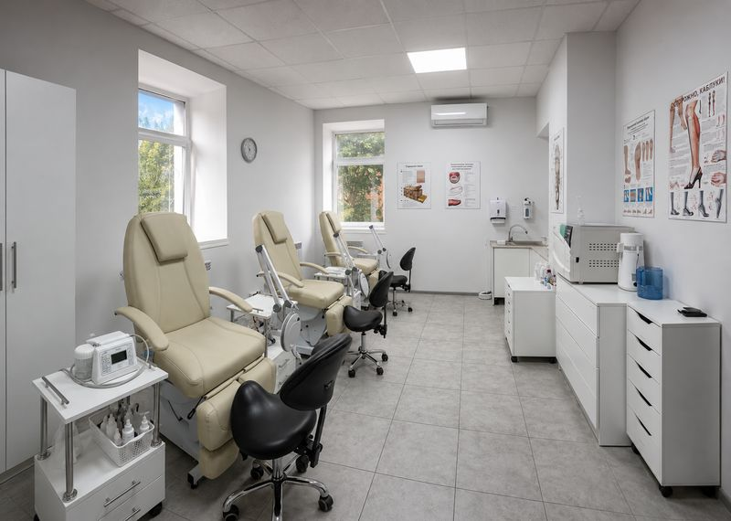
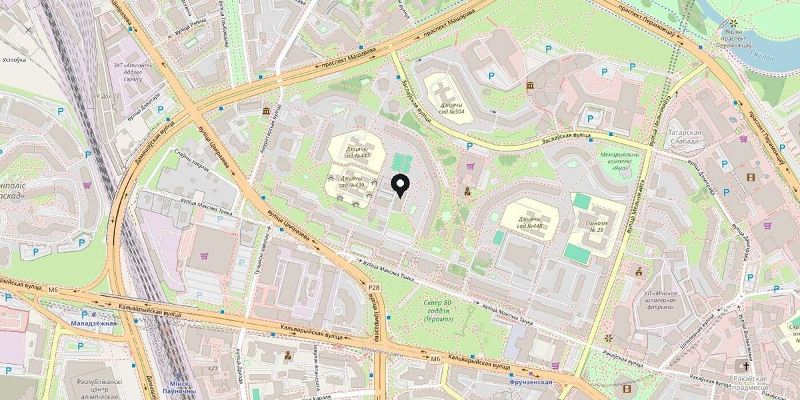

Ноготь врастает, пятки трескаются? Обработаем
Вросший ноготь, грибок, мозоли, трещины, деформации. Обрабатываем аппаратно и ведём курсом визитов до результата. Точную стоимость назовём по фото до визита.
- 10 летв подологии, от стола на съёмной квартире до центра
- 3специалиста: два подолога и мастер студии
- от 25 BYNобработка вросшего ногтя, один угол

Найдите свою проблему
Наведите на строку: покажем, где на стопе это находится. Каждая ведёт на страницу: как проходит приём, сколько визитов, цены.
- Уголок ногтя врезается в кожу, больно в обувиВросший ноготь
- Ноготь пожелтел, утолщился или крошитсяГрибок ногтей и стоп · обработка и сбор материала на анализ
- Твёрдое пятно на подошве, больно наступатьМозоли и натоптыши · в том числе стержневые
- Пятки сухие и шершавые, кожа трескаетсяТрещины и сухость стоп
- Ноготь потемнел после удара или отходитДеформация и травмы ногтя
- Ноги устают, обувь стаптывается набокИндивидуальные стельки · консультация и изготовление
- Ничего не болит, нужен регулярный уходГигиенический педикюр · покрытия
- Руки: аппаратный маникюр и покрытиеМаникюр
Где беспокоит?
Выберите место. Покажем, что это может быть и как проходит приём.
- Вросший ноготьуголок врезается в кожу, больно в обуви
- Грибок ногтей и стопноготь пожелтел, утолщился, крошится
- Деформация и травмы ногтяпотемнел после удара, отходит, утолщился
- Мозоли и натоптышитвёрдое пятно, больно наступать, стержень
- Трещины и сухость стоппятки шершавые, кожа трескается
- Индивидуальные стелькиноги устают, обувь стаптывается набок
- Гигиенический педикюрничего не болит, нужен регулярный уход
- Маникюраппаратный, долговременное покрытие
Найдите свою проблему
Каждая ведёт на страницу: как проходит приём, сколько визитов, цены
- Вросший ноготьуголок давит, больно в обуви
- Грибок ногтей и стопобработка и сбор материала на анализ
- Мозоли и натоптышив том числе стержневые
- Трещины и сухость стоппятки, огрубевшая кожа
- Деформация и травмы ногтяутолщение, гематома, отслоение
- Индивидуальные стелькиконсультация и изготовление
- Гигиенический педикюрплановый уход, покрытия
- Маникюраппаратный, долговременное покрытие
Потяните, чтобы сравнить до и после
Фотографии клиентов центра, без ретуши и размытия. Число визитов и даты по каждому случаю уточняем у студии.

 допосле
‹ ›
допосле
‹ ›
Слева до, справа после. Двигайте границу пальцем или мышью
Число визитов и сроки по каждому случаю подставим после ответа студии
Так выглядит динамика
Фотографии клиентов центра, без ретуши и размытия. Число визитов и даты по каждому случаю уточняем у студии.
Вросший ноготь, большой палец


Тот же ноготь, ракурс сбоку

Трещины и огрубевшая кожа пятки

Пятка, второй случай
Меня здесь не заразят?
Отвечаем документами и оборудованием, а не обещаниями.
Заключение санстанции без замечаний
Собственный документ центра. Открыть скан
Автоклав
Каждый инструмент проходит дезинфекцию, очистку, стерилизацию в автоклаве, упаковку и хранение до визита.
Немецкое оборудование
Аппаратная обработка с пылесосом: без пыли и без боли.
Кресла на 5 моторах
Положение стопы подстраивается под вас, а не вы под кресло.


Кто будет работать с вами

Илона
Руководитель центра, подолог, инструктор курсов для мастеров.
[что больше всего любит в работе, текст от заказчика]

Татьяна
Подолог. Работает со сложными стопами и корректирующими системами.
[что больше всего любит в работе, текст от заказчика]

Мастер студии
Педикюр и маникюр, долговременное покрытие.
[имя и текст от заказчика]
Сколько это будет стоить
У большинства позиций цена «от»: объём работы виден только на стопе. Пришлите фото в мессенджер, назовём точную стоимость до визита.
Обработка вросшего ногтя, 1 угол
Аккуратно обрабатываем уголок ногтя и защищаем кожу вокруг.
Обработка ногтей с грибком
Снимаем инфекционную нагрузку перед врачебными назначениями.
Педикюр гигиенический, полная обработка
Стопы и ногти целиком, базовая процедура регулярного ухода.
Фото нужно, чтобы увидеть объём работы: сколько ногтей, есть ли воспаление, нужна ли корректирующая система. Отвечаем в рабочие часы, переписка остаётся в мессенджере.
Десять лет назад у меня был маленький стол на съёмной квартире и большое желание помогать людям
Сегодня Ilonails – подологический центр в центре Минска, команда специалистов и оборудование, в которое вложено больше, чем в собственное жильё. Мы не обещаем невозможного. Зато честно говорим, что можем сделать, сколько это стоит и как ухаживать за стопами дома.
Об Илоне и курсахЧто говорят те, кто уже был
Отзывы подтягиваются с Яндекс.Карт и из YCLIENTS. Ничего не редактируем и не придумываем.
«Прекрасный мастер и идеальный маникюр. Спасибо огромное!»Яндекс.Карты · клиентка студии
Отзыв подгрузится автоматически после подключения Яндекс.КартЯндекс.Карты
Отзыв подгрузится автоматически после подключения YCLIENTSYCLIENTS
Курс «Педикюр с элементами подологии»
Практика в студии на реальных клиентах, малые группы до четырёх человек. Разрешение на обучение получено одними из первых в городе.
Как добраться и записаться
Минск, ул. Максима Танка, 20
Центральный район · метро Фрунзенская
Ежедневно до 20:00

Карта: © участники OpenStreetMap. На сайте будет виджет Яндекс.Карт.